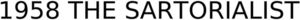

Trade Mark Journal No.2025/032 8 August 2025
WO0000001865212 (25)
Office of origin: Italy
Date of International Registration:30 April 2025
Date of designation in the UK:
30 April 2025

- Class 25
- Shirts; adult shirts; shirts for men; shirts for women; shirts for suits; sport shirts; camp shirts; casual shirts; polo shirts; collared shirts; cycling shirts; dress shirts; knit shirts; military shirts; nightshirts; over shirts; sleep shirts; turtleneck shirts; buttondown shirts; mock turtleneck shirts; open-necked shirts; shirts for wear with suits; sleeveless shirts; long-sleeved shirts; shirt-jacs; woven shirts; camouflage shirts; leather shirts; flannel shirts; pique shirts; shirt fronts; shirt yokes; braces [suspenders] for men's shirts; blouses; tee-shirts; printed teeshirts; short-sleeve tee-shirts; long-sleeve teeshirts; tops [clothing]; tank tops; knitwear; sweaters; cardigans; pullovers; jerseys [clothing]; sports jerseys; jackets [clothing]; bomber jackets; windresistant jackets; bed jackets; stuff jackets [clothing]; heavy jackets; suit jackets; sports jackets; jacket liners; denim jackets; coats; duffel coats; trench coats; overcoats; blousons; vests; padded vests; parkas; pelerines; ponchos; blazers; boleros; trousers; short trousers; pantsuits; jeans; bermuda shorts; shorts; skirts; underskirts; miniskirts; clothing; clothing for men; clothing for boys; clothing for women; clothing for girls; casual wear; formal wear; weatherproof clothing; clothing for sports; clothing for gymnastics; leisure wear; tailleurs; suits; women's suits; men's suits; evening suits; evening wear; leisure suits; combinations [clothing]; collars [clothing]; collars for dresses; chemisettes [shirt fronts]; dickeys [shirt fronts]; sweat shirts; arm warmers [clothing]; shoulder wraps [clothing]; breeches for wear; leggings [trousers]; leggings [leg warmers]; shortalls; pyjamas; nightgowns; nightwear; dressing gowns; undershirts; underwear; bodies [underclothing]; corsets [underclothing]; culottes; underpants; slips [underclothing]; thongs [underwear]; boxer shorts; brassieres; bodies [clothing]; waist cinchers; camisettes; lingerie; leotards; bathing suits; bikinis; bathing trunks; stockings; tights; socks; knee highs; stocking suspenders; garters; garters [suspenders] for men's shirts; petticoats; shifts [clothing]; gowns; headwear; foulards [clothing]; bandanas [neckerchiefs]; stoles; pocket squares; kerchiefs [clothing]; neckwear; scarves; neck tube scarves; gloves [clothing]; belts [clothing]; berets; cap peaks; visors being headwear; hats; small hats; caps being headwear; bonnets; shower caps; ear muffs [clothing]; headbands [clothing]; shoes; sports footwear; footwear; leisure footwear; shoes for women; footwear for men; gymnastic shoes; sports shoes; dress shoes; sandals; flip-flops [footwear]; soles for shoes; heels; insoles for footwear; leather coats; leather jackets; leather trousers; artificial leather clothing; clothing of leather or imitations of leather; leather hats; leather belts [clothing]; leather slippers.
DELSIENA GROUP S.P.A.
Representative: Dr. Modiano & Associati SpA, Via Meravigli 16, I-20123 Milano, ITALY